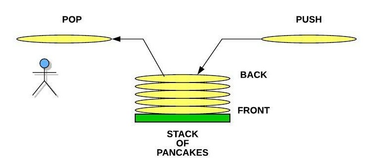
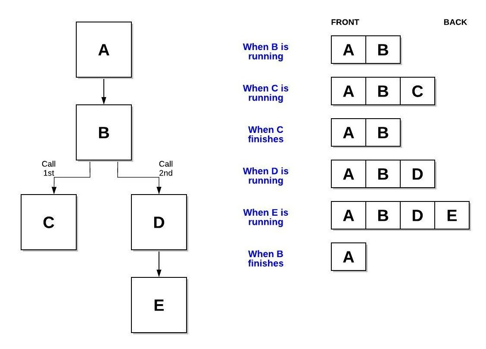
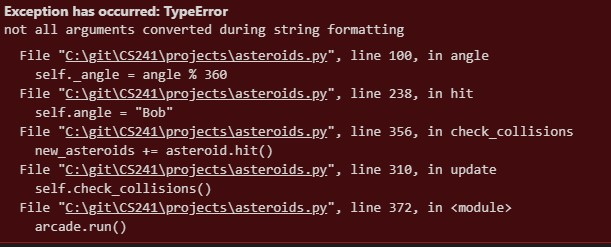

03 Prepare: Understanding Code using Reviews and Stacks
Overview
This week you will explore techniques of code review to support your understanding of code. You will practice your skills at understanding code using code that implements the Stack data structure (ref: Syllabus Course Outcome 3). You are still in the PREPARE phase of the course.

Here is the two day plan for this lesson:
Day 1 - Complete the reading below. The reading should take one hour to complete. For on-campus students, class time will be used to discuss the reading and explore examples. Online students should spend an additional hour communicating with other students in Slack and reviewing any examples or information provided by your instructor. You should begin to work on 03-Prove independently. You should plan on the assignment taking three hours to complete.
Day 2 - You will work with your study group to complete 03-Teach which will contain practice problems similar to your individual assignment. On-campus students will complete this activity during class time. The activity should take one hour to complete. You should finish work on 03-Prove independently.
The Stack Data Structure
A Stack is a Data Structure that is chacterized by the order in which items are added and removed. Often called "Last In, First Out" (LIFO), the Stack can be used to accomplish various tasks and can be implemented using a Python list.
Stack of Pancakes
If you were going to make pancakes for your family or friends, you probably will have a plate ready to stack the hot pancakes as the finish the cooking process. Each time we put a pancake onto the stack, we call this a push operation. In our culinary example, we might say that each new pancake goes onto the top of the stack. However, since we are going to implement our stacks in Python, we will say that the pancake is actually added to the back. When we take a pancake off to eat, we call this a pop operation. Notice that we push and pop from the back of the stack. Removing from the middle of the stack is not generally allowed (especially at the dinner table). Notice that the pancake at the front is the the very first pancake that was cooked. If the pancakes are made faster than they are eaten, then this first pancake will get cold. A LIFO (Last In Last Out) or FIFO (First In First Out) structure like the Stack can result in data not being used for a long time. This might not work well for a rotating stock system in a grocery store, but the real benefit of the stack is the ability to rememember where we have been.
The "Undo" Option and the Stack
One of the most common stacks that people use on a computer is related to the Undo option in word processors and editors. When we type something on the keyboard, the item is both displayed to the screen and also added to a stack. If we type the phrase "The rain in Spain stays mainly in the plain" we would expect the following commands to be put pushed onto the stack: Type "The", Type "rain", Type "in", and so forth. The last item to pushed would be: Type "plain". If we press the Undo button, the software will pop the stack and receive: Type "plain". The software will then do the opposite of this which would result in the word "plain" being removed from the screen.
Since the stack is maintaining a history of what was typed, we can guarentee that pressing the Undo button will revert changes in the right order. If we popped 5 additional times, we would have "The rain in" remaining on the screen. If we type "Idaho stays mainly in Rexburg.", we would see 5 new pushes to the stack. The original first 3 commands to display "The rain in" still remains at the front of the stack. If the Undo button is pressed enough times, then these initial words would eventually be removed.
Stacks are useful when we need to maintain history and perform an operation (eg. undo function in an editor) backwards.
Software and the Function Stack
Even if we didn't know what a stack was before today, we have actually been using stacks in all software we have written. When we call a function in our code, we are telling the computer 2 things:
Which function we want to call
Which function to go back to when we are done
The first of these is clear in our code. If we are currently in function A, then we expect to call function B. However, how do we tell the computer that we want to return function A when function B is finished. This can be even more complicated by the fact the function B will need to call functions C, D, and E before it can finish. The computer accomplishes this by using a function stack. When a function is called, it is pushed to the stack. The current function running is always on the back of the stack. When the function finishes, it is popped off the stack. The result is that the function to return too is the one that is on the back of the stack.
In addition to keeping track of the function name that is running, the stack also allows to see where in the function we were when a function was originally called as well as the memory that we were using in our function. Stacks work well for remembering where we've been and the circumstances we were in during that previous time.
When using Python or other programming languages, we will often times see error messages that look like the following. Notice that the information is showing which functions have called which functions up until the point of error. This display of information comes directly from the function stack.
Many code editors also include a debugger. Debuggers can be used to pause execution of software so that we can see what is occurring within our code step-by-step. Part of the debugger capability is the display of the function stack (or frequently called the call stack) when the software is paused (due to a breakpoint or an exception).

Stacks in Python
In Python, a Stack can be represented using a list. To push an item to the back of the Stack, the append function can be used on the list. To pop an items from the back of the stack, the pop function can be used. The pop function will also delete it from the list. The size can be determined by using the len function on the list. The performance of the Stack using a Python list is based on the performance of the dynamic array.
| Common Stack Operation | Description | Python Code | Performance |
|---|---|---|---|
| push(value) | Adds "value" to the back of the Stack | my_stack.append(value) | O(1) - Performance of adding to the end of a dynamic array |
| pop() | Adds "value" to the back of the Stack | value = my_stack.pop() | O(1) - Performance of removing from the end of a dynamic array |
| size() | Return the size of the Stack | length = len(my_stack) | O(1) - Performance of returning the size of the dynamic array |
| empty() | Returns true if the length of the Stack is zero. | if len(my_stack) == 0: | O(1) - Performance of checking the size of the dynamic array |
Understanding Code using Reviews
We have frequently been asked to write code for either school or work. However, how often have we been asked to complete the companion activity of reading code? We have likely looked at code from websites and books, but the there is a signficant difference between looking at code and reading code. When we read code, we are attempting to undersatnd the code like we would a book. If we open a book a read a few random pages we might get a high level summary of what the book is about. However, to fully understand the book, we would need to not only read the book cover to cover, but we would also need to become acquainted personally with the diverse set of characters, follow a potentially winding plot, and discover the underlying messages woven in the story from the author. This type of reading takes effort. Reading code for understanding takes an equal amount of effort.
There are multiple reasons why we might be asked to read code in our
A team member has written some code and has asked other engineers to review the code for correctness against the design and for compliance against company standards.
A team member is asked to modify some code that was written by a former employee with or without the aid of a well documented design.
A team member needs to integrate their software with an external library which included several code examples that demonstrate how to properly use the library.
When we read code others have written, we refer to this activity as a Review. A review should follow a methodoical process. Many companies will include a Review Checklist for engineers to use to ensure that they both understand the code and that they have checked all the coding standards. When you review code, there are several strategies that you can use including:
Read Code "Cover to Cover"
"Execute" the Code Manually
Ananlyze the use of Data Structures
Each of these methods will be discussed below. When working with these methods, we should try to employ principles learned from the Scientific Method. The Scientific Method requires us to form a hypothesis about what we think the code should be doing. As we read through the code, we will test our hypothesis and look at the results. If we are incorrect, then we can correct our misconceptions and form a new hypothesis. This iterative process is necesessary to fully understand code. There are no shortcuts. We can be tempted to search for the answer online or in a book. While this may produce a faster answer, we have not obtained full understanding of the code.
In this process, it is possible that we might find defects in the code that we were given. Code reviews are a common tool for increasing software quality. Performing these steps will requrie us to keep a good notebook to record are hypotheses, experiments, and conclusions. A good reviewer will always have pen and paper ready to complete their task.
Read Code "Cover to Cover"
Unlike a book, code does not begin on page 1. We need to find where the code begins and follow it as it calls functions, runs loops, and branches in different directions with decision statements. If the code has multiple functions, the creation of a structure chart (also called a calling tree) will be helpful. The structure chart will use boxes to represent functions and arrows to represent functions calling functions. Frequently drawn with the starting function at the top and working downwards, these diagrams can help us navigate through the code. On the arrows, we may frequently write the inputs and outputs related to each function. This will help us better undersatnd the data in the code and which functions are responsible for creating, modifying, and using that data.

If the code contains classes, then creating a UML (Unified Modelling Language) class diagram to show the classes (with member data and member functions) and the relationships between the classes will help us to visualize the software and enable us to read different sections of the code based on their dependencies to others. For example, in the diagram below, we can see that the Order HAS-A (object composition shown with the filled in diamond) list of Products and that each Product IS-A either a PerishableProduct or an ElectronicProduct (inheritance shown with the open triangle). With this drawn, we would probably start with understanding the Product base class first since it has no dependency on other objects. Second, we would review the different types of Products. Finally, we would review the Order class which containts the list of the Product objects that we already understand.
![Shows the classes and their relationships shown in the text above. The Order class has an integer order_id and a list of Product objects called products. The Order class has an init function, an add_product function that takes a product object as an input, and a display function. The Product class has a string name and a float price with an init function and a display function. The ElectronicProduct has a string url_download and both an init and download function. The PerishableProduct has a expiry datetime object and both an init and donate function.](uml_diagram.jpeg)
When we are looking at a single function, it can be useful to diagram the behavior of the function. Simple flow charts can quickly give us better perspective of loop and if statements in our code. In the flow chart, use diamonds to represent decisions, boxes to represent actions, and arrows to show flow.
![Shows the flow of random number guessing game. After getting the seed from the user and seeding the generator, a random number is selected and the guess counter is reset. A loop begins with the user being prompted for a guess. The guess counter will be udpated and then the guess is compared with the actual number. Either the phrase higher, lower, or congratulations will be displayed. If the correct answer was guessed, the guess count is also displayed. The user is prompted to play the game again. If they want to play again, then the process above repeast starting with the selection of a random number and the resetting of the guess counter. Otherwise, the software says goodbye and the program ends.](flow_chart.jpeg)
"Execute" the Code Manually
It is not always practical to run code that we are given. If we can, then running the code with inputs that we generate can be helpful to understand the software. However, the goal in this process is to understand the software without running the code on the computer. Instead, we are going to run the software in our minds and on paper.
If we created diagrams in the previous step from our reading of the code "cover to cover", then we can run the code from the diagrams. This is an incomplete approach but is very helpful in gaining more understanding of what the software will perform.
To execute code manually in our minds and on paper, we must start at the begining (or if we are looking a one piece of the sofwtare, perhaps start at the beginning of one of the functions). If inputs are provided at the beginning (or at any other place along the way), we will have to develop useful inputs to see what will happen. For example, if we had the following code:
def do_something(text):
new_text = ""
for letter in text:
if letter != " ":
number = ord(letter)
new_letter = chr(number + 1)
new_text += new_letter
else:
new_text += letter
return new_text
The function needs text and so we will propose some text like "Hello". We will then step through each line of code and record in our notebook the value of each variable. If we come across a code function that we don't understand (e.g. the ord and chr commands), then we will need to go online to read about those. The ord function will return the ASCII numeric code that represents a character. The chr function will convert an ASCII numeric code into a letter again. When we finish the code we get Ifmmp which appears to be a form of simple childhood encryption in which each letter in the original text is changed by one letter higher in the alphabet. When we ran the program, we noticed that you had to check if the letter was a space. It would be good to try to the test again with spaces. If we tried "Hello World", we end up with Ifmmp Xpsme. Not only does the function perform the encoding, but it also preserves the spaces.
| text | letter | number | new_number | new_letter | new_text |
|---|---|---|---|---|---|
| Hello | H | 72 | 73 | I | I |
| e | 101 | 102 | f | If | |
| l | 108 | 109 | m | Ifm | |
| l | 108 | 109 | m | Ifmm | |
| o | 111 | 112 | p | Ifmmp |
Analyze the use of Data Structures
When code contains a data structure like a list or a stack (and others that we will learn during the course), we should consider why the data structure was used. Data structures are used both for storing information but also to use the information in differet ways. Looking at the readings above, a stack is used if we want to remember where we have been and potentially go reverse or backwards. Knowing this capability, you can form a hypothesis about what the code is doing if you see a stack being used in the code. During the activities this week, you will be reading code that uses stacks. How the stack is being used will help you better understand the purpose and behavior of the code.